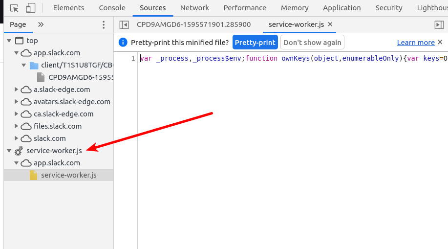
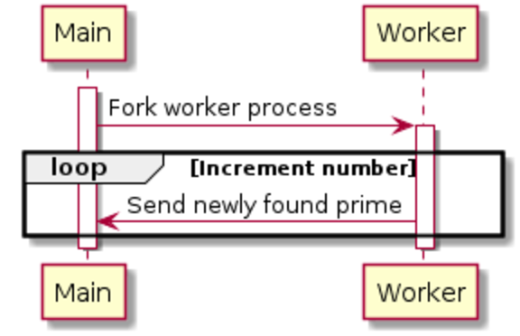

Web Workers API
Abstract
In this post, we describe Web Workers API which was introduced in 2010 as one of HTML5. The technology is based on fork to create a new sub process and Web Workers API enables web applications to fork an independent worker process in JavaScript world. The worker process has its own memory space and the parent main process isn't affected even if the forked process is crashed as general process system.
The practical use case is Slack that a dedicated worker process gets the notification from the server side. The worker process starts to run when we open on web browsers and it continues to stay until we close the browser tabs.

Architecture of Web Workers API
The usage of Web Workers API is to communicate between a main process and a worker process with using Worker.prototype.postMessage(message, [transfer]) and worker.onmessage handler. The data sent by postMessage() is internally converted into string data and passed into the worker processes. The onmessage() of receiver side is called back with the posted data.
MDN : https://developer.mozilla.org/en-US/docs/Web/API/Web_Workers_API
+--------------+ postMessage() onmessage() +-------------------+
| |------------------------------->| |
| main.js | onmessage() postMessage() | worker.js |
| |<-------------------------------| |
+--------------+ +-------------------+
|
|
+--------------+
| main.html |
+--------------+
Implicit Side effect
The general use case is to fork tiny processes running for a long time whose CPU loads are small as general resident application as Slack. However, we need to carefully consider the use cases before actually using on production because the load of CPU and consumed memory may not be small. The fork processing also consumes CPU resource because it take time to allocate its own memory. In addition, we should carefully consider the frequency to communicate between the main process and the worker process because frequent communication increases the load of CPU. The data sent between them is internally converted into string data because the memory space is different and it is impossible to refer to an address of an object of another process.
It is easy to use Web Worker API, but the developers should understand the heavy load of internal processing and the background of independent memory spaces. Otherwise, your web applications would encounter serious issues of low performance and high CPU usage.
#1 Sample program the worker process sends newly found prime
A 1st sample program is to delegate a dedicated process which continues to find prime numbers in the worker process and send to the main process. The sequence diagram between main and worker process is below.

The source code of main process is below. A worker object is instantiated with specifying the source file "basic.js" of the worker process. Then the worker process is internally forked and starts to run. Then, CPU usage is increased in this timing. Therefore, it is good strategy to delay the timing to fork until the dedicated process is actually needed for better performance.
When the worker process finds a new prime, the worker.onmessage(event) of main process is called back and the prime data can be retrieved with event.data.
In this sample program, the worker process continues to find new prime numbers forever, therefore we need a stop button to terminate the worker process with using worker.terminate().
<!doctype html>
<html lang="ja">
<head>
<meta charset="utf-8">
<title></title>
<script type="text/javascript" src="https://code.jquery.com/jquery-1.9.1.min.js"></script>
</head>
<body>
<button id="start">Start</button>
<button id="stop">Stop</button>
<div id="console"></div>
<script type="text/javascript">
var worker = null;
$('#start').on('click', function() {
// fork a worker process
worker = new Worker('basic.js');
// callback hander to receive data from worker process
worker.onmessage = function (event) {
$('#console').text(event.data);
};
});
$('#stop').on('click', function() {
worker.terminate();
});
</script>
</body>
</html>
The source code of worker process is below. When it finds a new prime, it sends with postMessage() to the main process.
var n = 1;
search: while (true) {
n += 1;
for (var i = 2; i <= Math.sqrt(n); i += 1)
if (n % i == 0)
continue search;
// Send a prime to main process !
postMessage(n);
}
Demo
#2 Sample program the worker process applies image filer
The 2st sample program is to delegate image filter processing to a worker process. The main process sends the pixel data of image files to the worker process. The filter result is sent back to the main process and it is rendered onto the canvas.
The sequence diagram between main process and web worker is below.

The source code of the main process is below. The main process sends the pixel data of a selected image to the worker process with postMessage().
<!doctype html>
<html lang="ja">
<head>
<meta charset="utf-8">
<title></title>
<!-- JavaScript Start -->
<script type="text/javascript" src="https://code.jquery.com/jquery-1.9.1.min.js"></script>
<!-- JavaScript End -->
</head>
<body>
<div id="console"></div>
<p>
<label>
Type an image URL to decode
<input type="url" id="image-url" list="image-list">
<datalist id="image-list">
<option value="http://localhost/~uchida/study/lottie-web/samples/output2/images/img_2.png">
<option value="http://localhost/~uchida/study/lottie-web/samples/output2/images/img_0.png">
</datalist>
</label>
</p>
<p>
<label>
Choose a filter to apply
<select id="filter">
<option value="none">none</option>
<option value="grayscale">grayscale</option>
<option value="brighten">brighten by 20%</option>
</select>
</label>
</p>
<div id="output"></div>
<script type="module">
// init a web worker
const worker = new Worker("worker.js", { type: "module" });
worker.onmessage = receiveFromWorker;
const url = document.querySelector("#image-url");
const filter = document.querySelector("#filter");
const output = document.querySelector("#output");
url.oninput = updateImage;
filter.oninput = sendToWorker;
let context, imageData;
function updateImage() {
const img = new Image();
console.log(url.value);
img.src = url.value;
img.onload = () => {
output.innerHTML = "";
var canvas = document.createElement("canvas");
canvas.width = img.width;
canvas.height = img.height;
context = canvas.getContext("2d");
context.drawImage(img, 0, 0);
imageData = context.getImageData(0, 0, canvas.width, canvas.height);
console.log(imageData);
sendToWorker();
output.appendChild(canvas);
};
}
// send the pixel data to worker process
function sendToWorker() {
worker.postMessage({imageData, filter: filter.value });
}
// called back by worker process
function receiveFromWorker(e) {
console.log(e);
context.putImageData(e.data, 0, 0);
}
</script>
</body>
</html>
The source codes of worker process are below. It receives the pixel data with being called back with onmessage(). When the worker process has applied image filters, it sends back to main process with sending postMessage().
worker.js whose role is to communicate with the main process.
import * as filters from "./filters.js";
self.onmessage = (e) => {
console.log(e.data);
const { imageData, filter } = e.data;
filters[filter](imageData);
self.postMessage(imageData, [imageData.data.buffer]);
};
filter.js whose role is to apply image filters.
export function none() {}
export function grayscale({ data: d }) {
for (let i = 0; i < d.length; i += 4) {
const [r, g, b] = [d[i], d[i + 1], d[i + 2]];
// CIE luminance for the RGB
// The human eye is bad at seeing red and blue, so we de-emphasize them.
d[i] = d[i + 1] = d[i + 2] = 0.2126 * r + 0.7152 * g + 0.0722 * b;
}
};
export function brighten({ data: d }) {
for (let i = 0; i < d.length; ++i) {
d[i] *= 1.2;
}
};